| 용사의 방패 | 전설의 용사가 애용한 신성한 방패 ■ 수비력：32 ※ 파괴 천체 시도에서 사이클롭스 드롭 ※ 으스스섬에서 미스터리 돌 처치 후 제조법 입수 |
블루 메탈 2 붉은 보석 1 금괴 1 강철괴 2 |
모루 | |
| 사신의 방패 | 해골을 본뜬 섬뜩한 방패 ■ 수비력：42 ■ 어쩐지 위험한 냄새가 풍긴다 ※ 첨벙첨벙섬에서 킹 머맨을 처치 후 제조법 입수 |
오리할콘 1 메탈 젤리 1 뼈 1 대지를 뚫을 큰니 2 |
모루 | |
| 오우거의 방패 | 오우거 족의 전사가 쓰던 매우 튼튼한 방패 ■ 수비력：38 ※ 플레이어 Lv.40 |
오리할콘 3 미스릴 1 금괴 1 |
모루 | |
| 가죽 방패 | 무두질한 가죽을 나무판에 붙여 만든 작은 방패 ■ 수비력：8 ※ 질퍽질퍽섬에서 오크를 처치 후 제조법 입수 |
모피 2 목재 1 |
모루 | |
| 풍신의 방패 | 풍신의 힘으로 몸을 지키는 방패 ■ 수비력：18 ※ 번쩍번쩍섬에서 기즈모(대)를 처치 후 제조법 입수 |
철괴 3 금괴 1 미스릴 1 |
모루 | |
| 거울 방패 | 빛나는 금속을 가공해서 보석을 박아 넣은 방패 ■ 수비력：36 ※ 첨벙첨벙섬에서 골드맨을 처치 후 제조법 입수 |
메탈 젤리 10 마력의 수정 1 목재 １ |
모루 | |
| 외톨이 메탈의 방패 | 굳은 외톨이 메탈을 소재로 만든 방패 ■ 수비력：40 ※ 작은 메달 65장 제조법 입수 |
메탈 젤리 2 강철괴 2 |
모루 | |
|
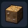 |
흙 | 흙 블록 | 가를듯한 작은 발톱 1 | 금단의 연성대 |
|
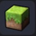 |
초원의 흙 | 풀이 자란 흙 블록 | 주렁주렁섬 | ／ |
|
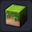 |
잔디밭의 흙 | 짙은 녹색 풀이 자란 흙 블록 | 숲 경단을 사용 | ／ |
|
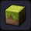 |
열대 초원의 흙 | 언제나 여름 분위기가 감도는 흙 블록 | 뒹굴뒹굴섬 오아시스 | ／ |
|
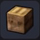 |
밭 | 괭이로 경작한 흙 블록 | 허수아비를 세우면 주민이 경작 | ／ |
|
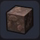 |
부엽토 | 작물이 자라는 데 필요한 영양이 가득한 흙 | 질퍽질퍽섬 | ／ |
|
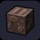 |
밭의 부엽토 | 작물이 자라는 데 필요한 영양이 가득한 밭의 흙 | 밭에 비료를 뿌리고 회수 | ／ |
|
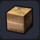 |
점토 | 점토층을 포함한 흙 블록 | 점토층 | ／ |
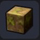 |
이끼 낀 흙 | 식물의 뿌리를 포함한 흙 블록 | 습지 | ／ |
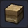 |
자갈 흙 | 자갈이 섞인 흙 | 황무지 | ／ |
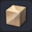 |
모래사장 | 해변에 펼쳐져 있는 부드러운 모래 | 해변 | ／ |
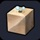 |
거품이 이는 모래사장 | 무언가가 묻혀 있는 해변의 거품이 이는 모래사장 (분홍 조개가 숨어있다) |
텅 빈 섬 - 해변 | ／ |
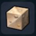 |
자갈해변 | 자갈이 섞인 모래사장 | 해변 | ／ |
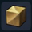 |
모래 | 모래 블록 | 사막 지역 무한 사용 목록： 첨벙첨벙섬 |
／ |
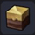 |
모래 마블 바위 | 흙과 바위가 층을 이루고 모래가 낀 블록 | 사막 지역 | ／ |
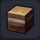 |
마블 바위 | 흙과 바위가 층을 이룬 블록 | 사막 지역 | ／ |
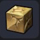 |
금이 간 모래 | 올라타기만 해도 부스러지는 금 간 모래 블록 ※ 금이 간 모래를 획득 후 (잠금 해제) |
모래 1 오카무르섬 |
그루터기 작업대 |
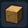 |
금이 간 흙 | 말라서 금이 간 흙 | 뒹굴뒹굴섬 | ／ |
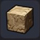 |
사암 | 압력을 받아 바위처럼 단단해진 모래 | 뒹굴뒹굴섬 | ／ |
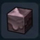 |
진흙 | 불순물과 물이 섞여 작물이 자랄 수 없는 흙 | 질퍽질퍽섬 | ／ |
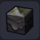 |
이끼 섞인 진흙 | 전체적으로 연하게 이끼가 자란 진흙 | 질퍽질퍽섬 | ／ |
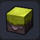 |
이끼 진흙 | 윗부분에 이끼가 자란 진흙 | 질퍽질퍽섬 | ／ |
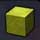 |
이끼 | 온통 이끼로 뒤덮인 블록 | 몬조라섬 습지 오카무르섬 춤추는 보석 형제 부근 / 질퍽질퍽섬 |
／ |
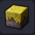 |
메마른 초원 | 메마른 풀이 붙어 있는 진흙 | 질퍽질퍽섬 | ／ |
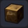 |
흙바위 | 암석을 미량 포함한 흙 블록 | 뒹굴뒹굴섬 | ／ |
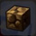 |
금이 간 흙바위 | 바위를 포함한 금 간 흙 블록 | 흙바위 1 | 그루터기 작업대 |
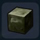 |
녹암 | 초록색으로 변한 바위 블록 | 뒹굴뒹굴섬 | ／ |
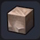 |
연회색 바위 | 물가에 있는 연회색 바위 | 각지역 | ／ |
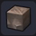 |
진회색 바위 | 물가에 있는 진회색 바위 | 각지역 | ／ |
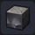 |
까만 바위 | 딱딱한 돌이 포함된 바위 블록 | 각지역 | ／ |
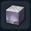 |
하얀 바위 | 흰색 바위 블록 | 각지역 | ／ |
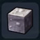 |
도톨도톨 바위 | 작은 돌을 포함한 바위 블록 | 각지역 | ／ |
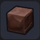 |
적산암 | 꽤 단단한 붉은 바위 | 각지역 | ／ |
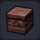 |
적산사암 | 돌이 섞인 붉은 바위 | 각지역 | ／ |
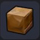 |
황산암 | 황토색 돌산 | 각지역 | ／ |
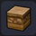 |
황산사암 | 돌이 섞인 황토색 돌산 | 각지역 | ／ |
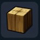 |
나무 블록 | 목재를 가공해서 만들어진 블록 ■ 색 변경 가능 ※ 빌더 하트 10 교환 (잠금 해제) |
목재 3 | 텅 빈 섬 작업대 |
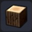 |
참나무 원목 | 참나무 원목을 운반하기 쉽게 가공한 블록 ■ 그대로 벽 등에 쓸 수도 있다 ※ 빌더 하트 10 교환 (잠금 해제) |
큰 나무의 수피 1 목재 3 |
그루터기 작업대 |
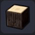 |
삼나무 원목 | 삼나무 원목을 운반하기 쉽게 가공한 블록 ■ 그대로 벽 등에 쓸 수도 있다 ※ 빌더 하트 10 교환 (잠금 해제) |
큰 나무의 수피 1 목재 3 |
그루터기 작업대 |
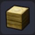 |
야자나무 원목 | 야자나무 원목을 운반하기 쉽게 가공한 블록 ■ 그대로 벽 등에 쓸 수도 있다 ※ 빌더 하트 10 교환 (잠금 해제) |
큰 나무의 수피 1 목재 3 |
그루터기 작업대 |
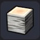 |
자작나무 원목 | 자작나무 원목을 운반하기 쉽게 가공한 블록 ■ 그대로 벽 등에 쓸 수도 있다 ※ 빌더 하트 10 교환 (잠금 해제) |
큰 나무의 수피 1 목재 3 |
그루터기 작업대 |
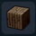 |
큰 나무의 수피 | 나무 표면을 뒤덮은 껍질 | 질퍽질퍽섬 | ／ |
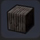 |
삼나무의 수피 | 큰 삼나무의 나무 껍질 | 꽁꽁섬 | ／ |
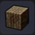 |
이끼 낀 수피 | 나무 표면을 뒤덮은 마른 껍질 | 출렁출렁섬 텅 빈 섬 선착장 |
／ |
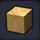 |
목재벽 | 자른 목재를 그대로 사용할 수 있게 만든 벽 | 목재 3 | 텅 빈 섬 작업대 |
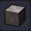 |
검은 목재벽 | 검게 변한 원목 ※ 빌더 하트 20 교환 (잠금 해제) |
목재 3 진흙 3 |
텅 빈 섬 작업대 |
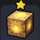 |
생명의 원목 | 일부만 남은 오랜된 거목의 원목 | 스토리진행 | ／ |
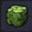 |
큰 나무의 잎 | 거대한 나무에 돋아난 잎사귀 | 질퍽질퍽섬 | ／ |
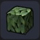 |
삼나무 잎 | 큰 삼나무의 잎 | 꽁꽁섬 | ／ |
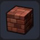 |
벽돌벽 | 벽돌을 쌓아올린 것으로 건축재로 자주 사용되는 블록 ※ 빌더 하트 20 교환 (잠금 해제) |
흙 5 | 텅 빈 섬 작업대 |
| 모래마을 벽 | 모래와 돌로 만들어 건조한 토지에서 사용되는 벽 ■ 나란히 놓으면 자동으로 변화 |
모래 3 석재 2 |
텅 빈 섬 작업대 | |
| 모래마을 벽돌벽 | 모래와 벽돌로 만들어 건조한 토지에서 사용되는 벽 ■ 색 변경 가능 ※ 빌더 하트 10 교환 (잠금 해제) |
흙 3 모래 2 |
텅 빈 섬 작업대 | |
| 세련된 벽 | 벽돌로 만들어진 블록 ■ 나란히 놓으면 자동으로 변화 / 색 변경 가능 ※ 빌더 하트 20 교환 (잠금 해제) |
목재 1 석재 3 |
텅 빈 섬 작업대 | |
| 세련된 벽B | 벽돌로 만들어 벽에 쓰이는 블록 | 석재 3 | 텅 빈 섬 작업대 | |
| 세련된 벽B - 상 | 벽돌로 만들어 벽의 정상부에 쓰이는 블록 ■ 색 변경 가능 |
목재 1 석재 3 |
텅 빈 섬 작업대 | |
| 세련된 기둥 | 목재를 가공해 만든 세련된 블록 ■ 나란히 놓으면 자동으로 변화 / 색 변경 가능 |
목재 3 | 텅 빈 섬 작업대 | |
| 돌담 | 부서진 석재를 말끔하게 짜맞춘 블록 ■ 나란히 놓으면 자동으로 변화 |
석재 3 동괴 1 석탄 1 |
텅 빈 섬 작업대 | |
| 깨진 돌담 | 엉망이 된 돌담 ※ 빌더 해머로 획득 후 (잠금 해제) |
돌담 1 | 그루터기 작업대 | |
| 회반죽 벽 | 회반죽으로 만든 벽 ■ 색 변경 가능 |
하얀 바위 1 마른 풀 1 고둥 1 |
텅 빈 섬 작업대 | |
| 모르타르 벽 | 모르타르를 굳혀 만든 벽 | 하얀 바위 1 점토 1 모래 1 |
텅 빈 섬 작업대 | |
| 강철 벽 | 철을 굳혀 만든 벽 ■ 색 변경 가능 |
철괴 3 | 텅 빈 섬 작업대 | |
| 성벽 | 연만된 돌로 만들어진 아름다운 블록 ■ 나란히 놓으면 자동으로 변화 |
대리석 2 | 텅 빈 섬 작업대 | |
| 성벽 - 상B | 연만된 돌로 만들어진 아름다운 블록 ■ 성벽의 정상부에 쓰기에 적합하다 |
성벽 1 | 파츠 체 | |
| 금세공 성벽 - 하 | 화려한 금세공이 들어간 성벽의 아랫부분 | 대리석 2 금괴 1 |
텅 빈 섬 작업대 | |
| 금세공 성벽 - 상 | 화려한 금세공이 들어간 성벽의 윗부분 | 대리석 2 금괴 1 |
텅 빈 섬 작업대 | |
| 성 장식 벽 - 하 | 성벽 아랫부분에 놓는 블록 | 대리석 2 | 텅 빈 섬 작업대 | |
| 성 장식 벽 - 상 | 성벽 꼭대기에 놓는 블록 | 대리석 2 | 텅 빈 섬 작업대 | |
| 깨진 성벽 | 엉망이 된 성벽 | 성벽 1 | 그루터기 작업대 | |
| 성탑 | 멀리까지 감시할 수 있는 성탑 ■ 나란히 놓으면 자동으로 변화 |
대리석 4 | 텅 빈 섬 작업대 | |
| 사교의 벽 | 하곤성에 쓰이는 꺼림칙한 벽 ■ 나란히 놓으면 자동으로 변화 |
파괴의 모래 5 뼈 1 |
텅 빈 섬 작업대 | |
| 사교의 벽 - 상B | 섬뜩한 분위기가 감도는 블록 | 파괴의 모래 5 뼈 1 |
텅 빈 섬 작업대 | |
| 금세공 사성 성벽 - 하 | 화려한 금세공이 들어간 사교 벽의 아랫부분 | 파괴의 모래 5 뼈 1 |
텅 빈 섬 작업대 | |
| 금세공 사성 성벽 - 상 | 화려한 금세공이 들어간 사교 벽의 윗부분 | 파괴의 모래 5 뼈 1 |
텅 빈 섬 작업대 | |
| 사교의 장식 벽 - 하 | 하곤성 성벽의 아랫부분에 놓는 블록 | 파괴의 모래 5 뼈 1 |
텅 빈 섬 작업대 | |
| 사교의 장식 벽 - 상 | 하곤성 성벽의 꼭대기에 놓는 블록 | 파괴의 모래 5 뼈 1 |
텅 빈 섬 작업대 | |
| 사교의 문양 벽 | 하곤성 문양이 들어간 벽 | 파괴의 모래 5 뼈 1 |
텅 빈 섬 작업대 | |
| 깨진 사교의 벽 | 엉망이 된 하곤성의 성벽 | 파괴의 모래 5 뼈 1 |
그루터기 작업대 | |
| 사교의 탑 | 하곤성 탑에 쓰이는 블록 ■ 나란히 놓으면 자동으로 변화 |
파괴의 모래 5 뼈 1 |
텅 빈 섬 작업대 | |
| 마성 성벽 | 섬뜩한 분위기가 감도는 블록 ■ 나란히 놓으면 자동으로 변화 |
까만 용암 3 | 텅 빈 섬 작업대 | |
| 짚바닥 | 말린 풀을 엮어 만든 블록 | 마른 풀 3 실 1 |
텅 빈 섬 작업대 | |
| 판자 바닥 | 자른 목재를 판자로 만들어 덧댄 바닥 ■ 색 변경 가능 |
목재 3 | 텅 빈 섬 작업대 | |
| 금이 간 판자 바닥 | 오랜되어 금이 간 나무 판자 바닥 | 판자 바닥 1 | 그루터기 작업대 | |
| 나무 바닥 | 목재를 짜맞춰 표면을 연마한 블록 ■ 색 변경 가능 ※ 빌더 하트 10 교환 (잠금 해제) |
목재 3 | 텅 빈 섬 작업대 |